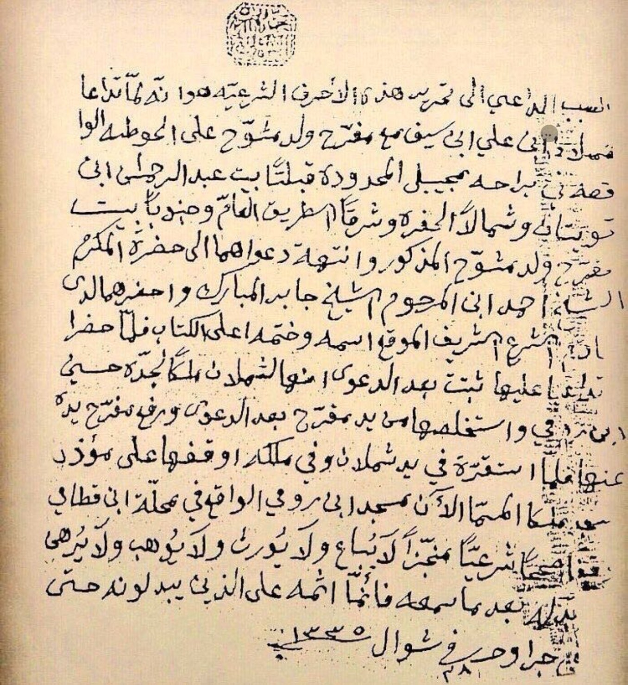

٢٨ شوال ١٣٤٠هـ (٢٤ يونيو ١٩٢٢م) · حجة وقف بعد نزاع على أرض، في عهد الشيخ أحمد الجابر
وقفية شملان بن علي بن سيف: مسجد ابن رومي «الواقع في محلة ابن قطامي»
ما هي
تنازع شملان بن علي بن سيف ومفرح ولد مشوح على حوطة في براحة مجبل، فانتهت دعواهما إلى الشيخ أحمد الجابر فأحضرهما لدى القاضي، وثبت أنها ملك لشملان من جده، فلما استقرت في يده أوقفها على المسجد المسمى الآن مسجد ابن رومي «الواقع في محلة ابن قطامي».
أهميتها
تثبت أن الحي حول مسجد ابن رومي كان يُسمى رسميا باسم عائلتنا «محلة ابن قطامي» سنة ١٩٢٢، وهو الاسم نفسه الذي يذكره الجزء السابع من معالم مدينة الكويت القديمة لفريج ابن رومي، حيث كانت بيوت القطامي ومسجد القطامي.
من المقصود
لا يُذكر في الوثيقة أحد من العائلة، وإنما أُضيفت لأنها تسمي الحي باسم العائلة: محلة ابن قطامي.
صور الصفحات

النص الأصلي
ملاحظات
الوثيقة مكتوبة بخط اليد وبعض الكلمات غير واضحة في هذه النسخة، وقد وُضعت مكانها … في النص. يرجى مطابقتها مع نسخة أوضح.
أسماء أخرى
المصادر
نسخة من الوثيقة في درايف العائلة، ويستخدم الجزء السابع من معالم مدينة الكويت القديمة الاسم نفسه للحي.
كيف كُتب هذا النص: نسخه Claude من صورة الوثيقة، وبعض الكلمات تحتاج إلى مراجعة. الترجمة الإنجليزية من Claude، يرجى مراجعتها.
افتح في الموقع التفاعلي